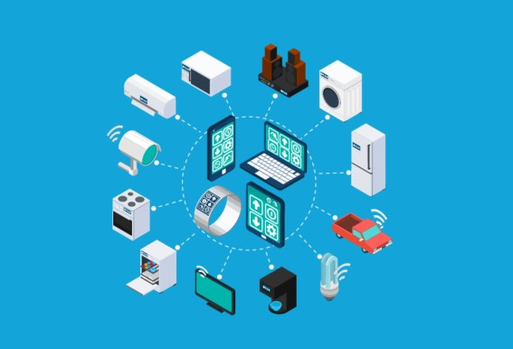

WEB-JAMM Tecnología y servicios realiza sus actividades comerciales en la ciudad de Pasto desde el 2022. Es una empresa dedicada a la prestación de servicios relacionados con el área tecnológica e informática, así como también la venta de productos electrónicos que están a la vanguardia de las últimas tendencias que el mercado demanda; Por eso reunimos nuestros esfuerzos y trabajamos profesionalmente colaborando en un ambiente multidisciplinario, el cual permite un compromiso del personal y las altas gerencias.

Es por eso que internamente la empresa ha clasificado los dispositivos y servicios que ofrece en tres líneas de negocio las mimas que son